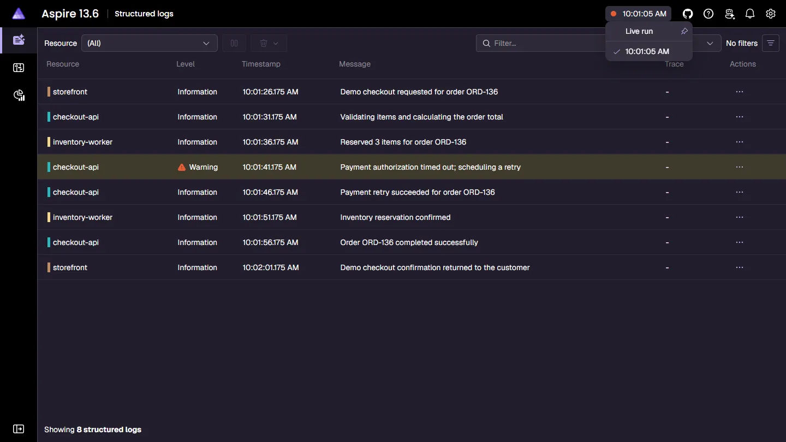

Who we are
Maddy Montaquila
Principal PM, Aspire
@ Microsoft
@maddymontaquila
Tommaso Stocchi
Cloud Solution Architect,
Microsoft
@tommasodotNET
Agents are in your app now. And in your dev loop.
You’re asked to ship agents — while coding agents write more of your code.
Both need an app that’s easy to run, see, and deploy.
Three ways AI shows up in your work
Demo 1
Use AI
Coding agents that help you do your job faster and better.
Demo 2
Build AI
Agents and AI-powered experiences inside the apps you ship.
The glue
Build for AI
The inner loop is now agentic. Dev tools need to meet us there.
What is Aspire?
Aspire is an agent-ready, code-first tool to compose, debug, and deploy any distributed app.
Including the agentic ones.
What makes up Aspire?
AppHost
The code-first map of your app: every service and how they connect. C# or TypeScript.
Integrations
100+ packages for databases, caches, queues, AI and clouds. Opinionated by default.
Dashboard
Logs, traces, metrics and resources in one place — plus an MCP server for agents.
CLI
One agent-ready control plane to create, run and deploy the whole thing.
Part 1 · Use AI
Using coding agents with Aspire
Give your coding agent the app model, workflow and visibility.
AI is how we build and ship Aspire
The agent inner loop with Aspire
From guessing to observing
1
Read the AppHost
Understand the topology: services, resources, references
2
Change code
Edit code or add a resource or integration
3
aspire start
Run and track the full stack with one command
4
Operate
Test user flows and run custom commands
5
Inspect + verify
Check logs, traces and health; MCPs for resources and interactions
Back to step 2 — repeat until the behavior is verified
Give your coding agent “eyes”
Skills and the Aspire CLI
Built for coding agents. Set up with aspire agent init.
Everything in the dashboardthe agent sees what you see, from the CLI
Filtered logs, metrics and tracessmall enough to fit in context
aspire docsthe highest-confidence docs articles for the task
Anatomy of a skill
Discovery metadata
The name and description tell the agent when this skill is relevant.
Workflow instructions
The body gives it a tested sequence of actions instead of inventing one.
Checks and guardrails
Health checks, stop conditions, and verification define what “done” means.
Demo 1 · Use AI
Supercharge an app
with Aspire + AI
Barista Notes — bring an existing app into the Aspire + AI dev loop.


Aspire 13.6 · Select to enlarge · Esc to return
Aspire for AI dev
Local dev loop
Run the full stack against local or provisioned models.
Observability
GenAI visualizations for OpenTelemetry in the dashboard.
Deployment
Your agent is just another service, container and endpoint.
Part 2 · Build AI
Building agents with Microsoft Agent Framework
Agent Framework + Aspire, end to end
An agentic app is a distributed app
Models
Local or cloud deployments, keys and endpoints
Agents
One or many services, often in different languages
Tools and MCP
Servers and APIs your agents call to get work done
Memory
Vector stores, caches and databases for context
Frontends
The chat UI or app your users actually see
Telemetry
What did the model actually do, and why?
Microsoft Agent Framework
Open-source SDK for AI agents and multi-agent workflows. 1.0 for .NET and Python since April 2026; Go in preview.
Agents
Foundry, OpenAI, Anthropic, Ollama and more behind one API
Workflows
Graph-based: sequential, concurrent, handoff, group chat
Tools and MCP
Your own functions plus any MCP server, with middleware
Telemetry
OpenTelemetry GenAI traces and metrics for every call
The successor to Semantic Kernel and AutoGen, built by the same teams.
Modeling an agentic app in the AppHost
Connect with references, not hand-wired config — same path from local dev to deployment.
Demo 2 · Build AI
Agent Framework demo
An Agent Framework agent, a model and a frontend — orchestrated by Aspire, traced in the dashboard.
Resources
Aspire docs
Agent Framework
Install the CLI
Agent skills
Integrations
Community
Today’s demo
Thank you
Now go let an agent build your next agent.
Docs
aspire.dev
Socials
@aspiredotdev
Maddy
@maddymontaquila
Tommaso
@tommasodotNET
Scan to review this session.